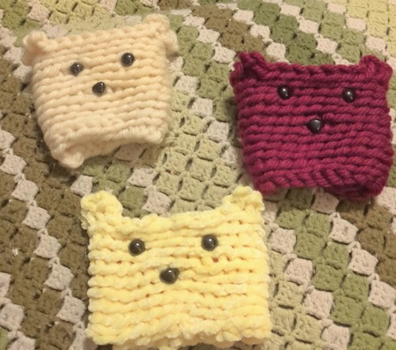

This summer I took up a new hobby. I have wanted to learn how to crochet for a long time but never had a chance to sit down and learn. This year me and my friend Mary wanted to learn to crochet and attend a craft show with our creations. I started with making cup cozies and have worked my way up to making scarfs, gloves, and hats. My current project is makibng myself a blanket. There are several ways to crochet, I use single crocheting. There is double crocheting, triple, ect. I am looking forward to learn more about the world of croceting and create new peices.
